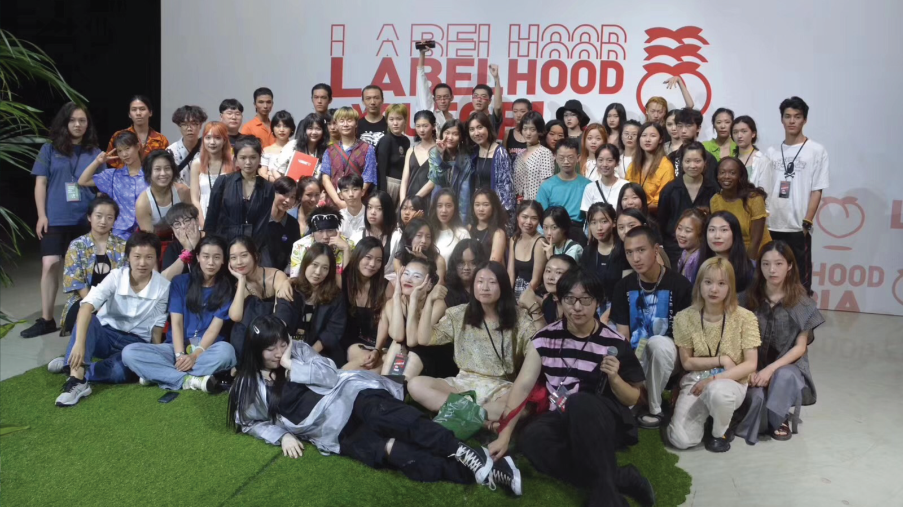
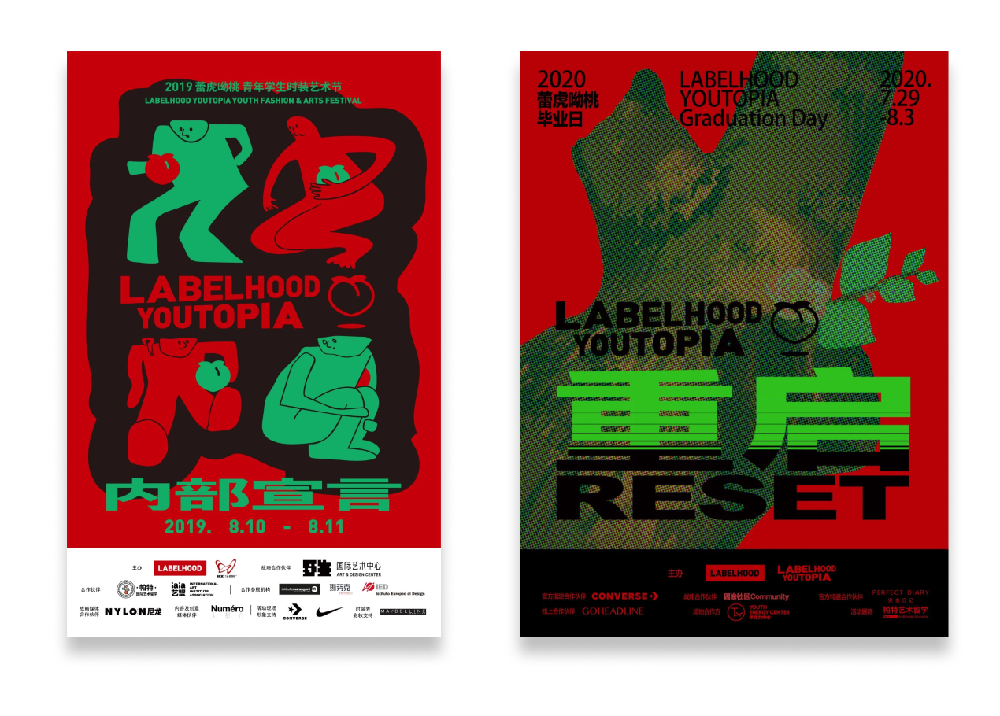

In China, teenagers lack a platform to express their creativity. I joined the Youtopia in the summer of 2019. Starting from an editor and now the Head of Media, I witnessed the organization's growth from "another student-org" to the biggest fashion and art community in Shanghai. Interested in what I did? Read on. :)
YOUTOPIA
Head of Media
Overview
- Digital Media Curation
- Campaign Operations
- One Year
- Aug 2019 to Present
- Digital Media Team
My Involvements
Timeframe
My Team
What is YOUTOPIA?
YOUTOPIA is a fashion incubator and a fashion & art student community based in Shanghai. It was established in 2015 by a group of high schoolers and has became the largest student-run art & fashion organization Shanghai, China.

Things I Did
Launching Annual Fashion & Art Festivals
One of the main activities of Youtopia is the once-in-a-year fashion & art festivals in Shanghai. As the Head of Media, I have led the media marketing campaign twice for the festival. In our last festival on Aug 2th, we sold our our 300 tickets within three hours!🎇
Social Media Content Curation
Aside from luanching festivals, I was also in charge of maintaing the content of YOUTOPIA's social media platform.
Since I joined, I managed to successfully increase YOUTOPIA's Wechat Official Account's subscribers by 75%, from around 3000 in August 2019 to 7000 now. 🍻
Why I Joined
Passion for Inclusivity
Although UX Design is not very similar to art, I have always had a passion for art and lots of my close friends are artists themselves. Born in China, it is not easy to fully pursue a career in art. Seeing the hardships that my artist frineds go through, I wanted to do something that can help them connect with professionals in the fashion & art industry.
Although I am pretty happy with what we have done here in YOUTOPIA, I know that there is still a long way for us to go. 🌉

Me and Other Board Members ~